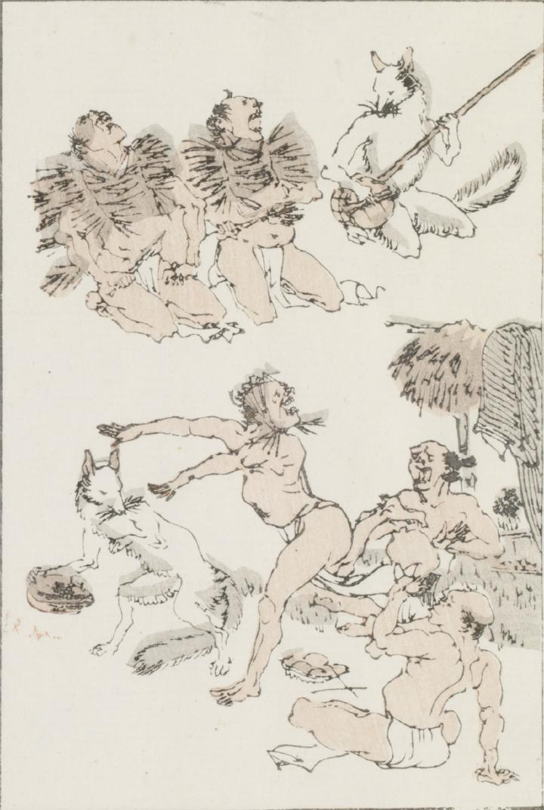

狐に騙された人々の様子を描いたと思われる。白い狐が2匹おり、1匹は座って、柄杓のようなものを三味線のように持っている。その横で褌姿の2人の男が座り、藁らしきもので編んだ上着状のものを肩にかけ、右手に棒状のものをつかんで、上を向いて声を張り上げている。もう1匹の狐は前脚で包み状のものを持って歩いている。1人の男が、藁を手拭いのように頭に巻きつけ、狐の後を追うように踊っており、その周りに2人の男が座って囃し立てている。この男たちも褌姿で、藁を干した棒に、脱いだ着物がかかっている。
著作者：牧墨僊／出典：親書誌：U426_nichibunken_0097：滑稽洒落狂画苑；コッケイシャレキョウガエン／日付：2007／資源識別子：U426_nichibunken_0097_0017_0000
Copyright (c)2010- International Research Center for Japanese Studies, Kyoto, Japan. All rights reserved.